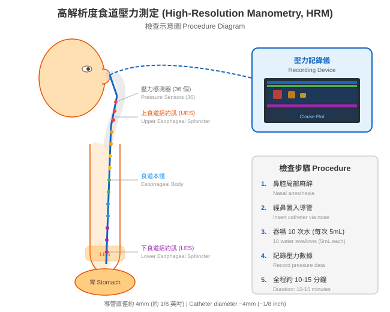

食道 (esophagus) 是連接喉嚨與胃之間的管狀器官，長約 25 公分。當我們吞嚥食物時，食道會透過有規律的肌肉收縮（稱為蠕動，peristalsis）將食物推送到胃中。食道下方有一個重要的環狀肌肉，叫做下食道括約肌 (lower esophageal sphincter, LES)，它就像一道門，在吞嚥時打開讓食物通過，平時則關閉防止胃酸逆流 (reflux) 回食道。
食道功能檢查是一系列專門評估食道運動功能和逆流狀況的檢查，能幫助醫師了解您的食道是否正常運作。

圖：HRM 檢查示意圖。細管經鼻腔放入食道，36 個壓力感測器記錄吞嚥時的壓力變化。當您出現以下症狀，且一般的內視鏡 (endoscopy) 或影像檢查無法充分解釋原因時，醫師可能會建議您接受食道功能檢查：
graph TD
A[食道功能檢查] --> B[運動功能檢查]
A --> C[逆流監測檢查]
A --> D[其他功能檢查]
B --> B1[高解析度食道壓力測定<br/>HRM]
C --> C1[24小時酸鹼監測<br/>pH monitoring]
C --> C2[酸鹼阻抗監測<br/>pH-impedance]
C --> C3[無線酸鹼監測<br/>Bravo]
D --> D1[功能性腔體成像探針<br/>FLIP]| 檢查名稱 | 主要目的 | 一句話說明 |
|---|---|---|
| 高解析度食道壓力測定 (HRM) | 評估食道肌肉運動 | 測量吞嚥時食道的壓力變化 |
| 24 小時酸鹼監測 (pH monitoring) | 測量胃酸逆流 | 記錄一整天食道內的酸度 |
| 酸鹼阻抗監測 (pH-impedance) | 偵測所有類型逆流 | 同時測量酸性和非酸性逆流 |
| 無線酸鹼監測 (wireless pH/Bravo) | 測量胃酸逆流 | 免鼻管，用小膠囊記錄酸度 |
| 功能性腔體成像探針 (FLIP) | 評估食道彈性 | 測量食道可以撐開的程度 |
flowchart TD
Start[您有吞嚥困難、胸痛<br/>或逆流症狀] --> Q1{已做過胃鏡<br/>或其他基本檢查?}
Q1 -->|否| A1[建議先做基本檢查<br/>如胃鏡等]
Q1 -->|是| Q2{檢查結果是否<br/>能解釋症狀?}
Q2 -->|是| A2[依檢查結果治療]
Q2 -->|否| Q3{藥物治療<br/>效果如何?}
Q3 -->|有效| A3[繼續藥物治療<br/>定期追蹤]
Q3 -->|無效或不確定| A4[建議進行<br/>食道功能檢查]
A4 --> Q4{醫師評估後<br/>選擇適合的檢查}
Q4 --> R1[HRM<br/>壓力測定]
Q4 --> R2[pH 監測<br/>逆流檢測]
Q4 --> R3[FLIP<br/>彈性評估]以下情況可能不適合進行食道功能檢查，請事先告知醫師：
| 情況 | 說明 |
|---|---|
| 嚴重鼻腔異常或近期鼻部手術 | 導管可能無法順利經鼻置入 |
| 嚴重凝血功能異常 | 導管置入可能造成出血 |
| 食道嚴重狹窄或阻塞 | 導管可能無法通過狹窄處 |
| 近期食道或胃部手術 | 需待傷口癒合後再進行 |
| 嚴重心肺功能不全 | 檢查過程可能加重不適 |
| 無法配合吞嚥指令 | 檢查需要病人配合吞嚥動作 |
以上為相對禁忌症，醫師會根據您的個別狀況評估是否適合接受檢查。
食道功能檢查整體而言是安全且風險很低的檢查。大多數人在檢查過程中可能會感到輕微不適（例如鼻腔或喉嚨的異物感），但通常都能順利完成。嚴重併發症極為罕見。
目前在台灣，多家醫學中心設有食道功能檢查的設備與專業團隊，包括台北榮總、三軍總醫院（設有專門的食道功能檢查中心）、亞東醫院、台大醫院、長庚醫院等。國際上，美國的西北大學 Kenneth C. Griffin 食道中心、紐約大學朗格尼食道健康中心等，都是此領域的知名機構。
📋 請填入貴院資料：
- 本院負責科別：_______________
- 聯絡電話 / 分機：_______________
- 門診時間：_______________
- 主治醫師：_______________
- 本院檢查設備與特色：_______________